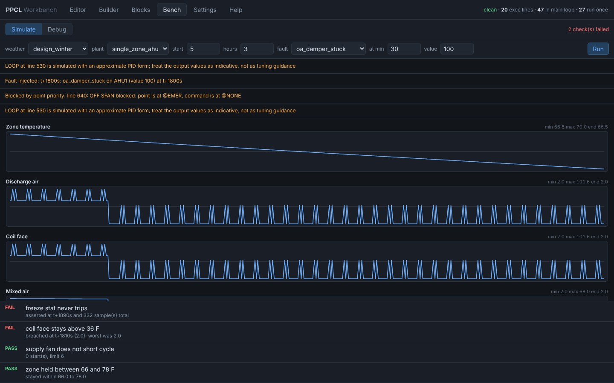

What's in it
Editor
Checks as you type: errors, warnings and unresolved points marked in the gutter. Opens Desigo and Insight exports, and uses the Desigo CC editor's keys: go to statement, find and replace, comment, quick numbering, Command Assist.
90 lint rules, each cited
Every rule names the manual page it comes from. Plus transforms that are exact by machine and tedious by hand: DEFINE expand and collapse, point-name separator swap, clone a block with renames.
Builder
Author from a decision table, equipment against modes, Siemens' own planning method. The compiler guarantees one backward GOTO, every interlock force released at the same priority, and no time-based command inside an IF.
Blocks
Draw the control as 30 kinds of blocks and wires and compile it to PPCL as you draw, with logic kept as expressions rather than a statement per block.
Bench
Run the program against simulated equipment: mixing box, coils, fan, a zone with thermal mass. Pick the weather, inject a fault, read the trends. Point priority is exact, so a command blocked by a higher priority is reported.
Debugger
Line breakpoints, write watchpoints that name the line that commanded a point, and conditional breakpoints written in PPCL. Step, watch each point's value and priority, and override any point mid-run.
Find the bug before the building does

What PPCL lets through, and the rule that catches it
| A point latched at @EMER, never released | The schedule silently stops working |
|---|---|
| LOOP, TOD or WAIT outside the main loop | Runs once at load, then never again |
| A duplicate line number | One line silently vanishes on load |
| SAMPLE or TIMAVG inside a GOSUB | Timing drifts unpredictably |
| Two unconditional writers on one point | Behavior depends on line order |
Honest about what it is
It never touches a building
- No panel writes, no network client, no BACnet or P2 connection. It reads and writes files; you load the result through Insight or Desigo CC yourself.
- The server binds 127.0.0.1 and keeps every file inside the workspace folder.
- Zero dependencies: the server is Python's own
http.server, the UI plain ES modules.
The bench is a model
The equipment models are first-order approximations, good for exercising control logic and worthless as a load calculation. Siemens doesn't publish LOOP's PID form, so its output is approximate and says so at runtime: never take a tuning constant from the bench to a real panel.
Every command signature traces to the manual or to Desigo CC's own Command Assist. The parser has read 2,644 lines recovered from programs running on panels without a miss.
Run it
Windows
Download the latest release, unzip it, and double-click ppcl.bat. It finds a suitable Python, starts the workbench and opens it in your browser.
Any OS, with Python 3.10 or newer
From the unzipped folder or a clone, start the workbench:
python -m ppcl serve
Or use the command line: lint a folder, or bench a program with a fault.
python -m ppcl lint programs/ python -m ppcl bench AHU1.ppcl --weather design_winter
Feedback
Found a rule that's wrong, or PPCL it can't read? Open an issue. The full documentation, including what is verified against the manual and what is approximated, is in the README and the app's Help pane.